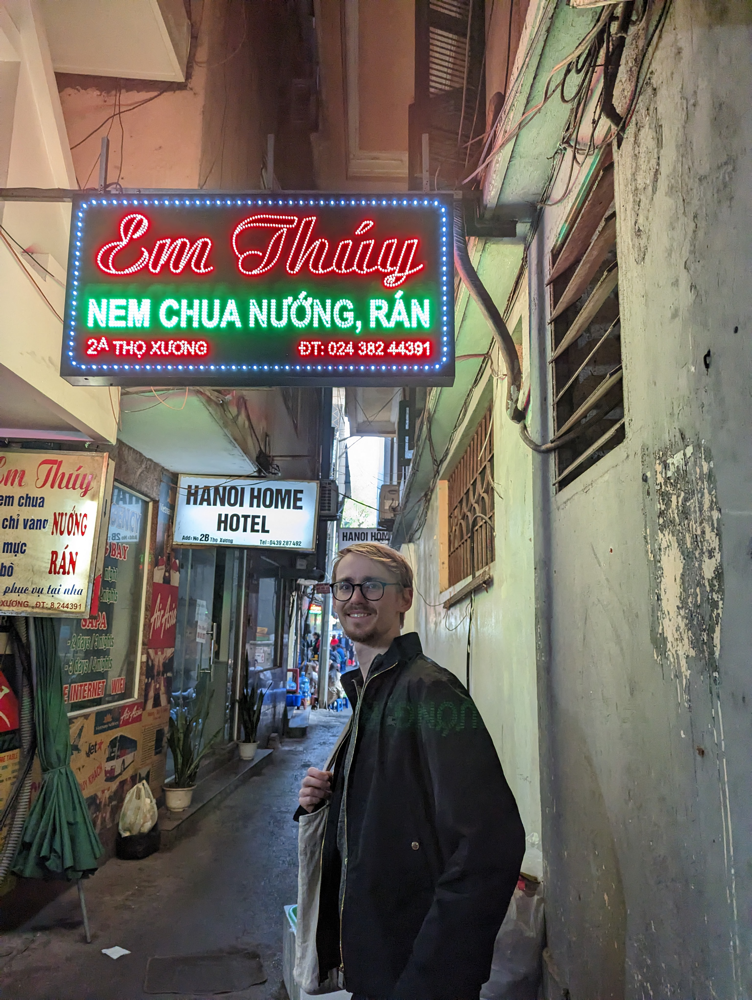

Wedding Timeline
RSVP
Please let us know if you will be attending our special day ❤️
FAQs
What is the RSVP deadline?
Please register for yourself and your plus one by 12 November 2026!
What should I wear?
Wear formal, glamorous yet comfortable outfits. If you have a pink/orange/red outfit, please rock them asap. White/ivory is reserved for the bride.
Are there options for my dietary requirements?
Of course! When filling out the form, please let us know if you have any dietary restrictions or are vegetarian.
What time should I arrive?
Please arrive before 11:30 at Pan Pacific. If you wish to attend the tea ceremony, please contact us/Lan's parents directly! Our place is just a 5-minute walk from the wedding venue.
How should I get there?
Depending on where you're coming from, you can take the bus, motorbike taxi (Grab), or regular taxi. Please leave early as Hanoi traffic can be heavy, and Lan doesn't like being late.
Do we have any gift ideas?
You already made the trip, no need for gifts (can always sing us a karaoke song)! We will have a card box available at the venue if you bring one!
Hanoi Travel Recs
Where should I stay?
Staying close to the Old Quarter is the easiest for exploring Hanoi. Airbnb options are very affordable, or 4-star hotels are usually a great value. We're staying at an Airbnb ourselves in between West Lake and Old Quarter area (on Nguyen Truong To street) if you want to be close to us!
How far in advance should I book my travel?
Book as early as possible! Hanoi is a popular destination, and flights and hotels can fill up quickly, especially during peak travel seasons. We recommend booking at least 2-3 months in advance for the best prices and availability.
How do I get around the city?
We recommend walking if you are in the Old Quarter (be mindful of the traffic!). For longer distances, Grab is widely used, or you can book Green SM which runs an entire fleet of Vietnamese EVs.
Things to do (+ food to eat)?
Lan's knowledge isn't so current, so her sister and friends helped put together this Hà Nội sightseeing and food map. If you have more time, we would recommend some pottery painting or lacquer paining class, day / overnight trip to Hạ Long Bay or Ninh Bình. If you're in to coffee, specialty coffee experience @ Sứ Quân Roastery we also heard is good!
